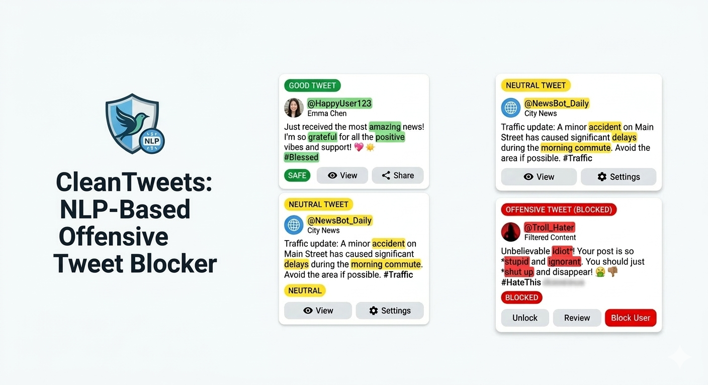

About Me
I am an AI/ML Engineer with a career focused on taking complex data systems from '0 to 1' while maintaining high production standards[cite: 9]. In my current role as Founding AI Engineer at Nexora AI, I architected a multi-tenant platform for over 1,000 concurrent users, specifically focusing on solving the reliability gaps in Generative AI[cite: 10, 24]. I previously worked as an ML Engineer where I focused on the 'MLOps' side of the house building end-to-end supervised learning pipelines and ELT processes[cite: 54, 58]. By combining this foundational ML infrastructure experience with my current focus on agentic LLM systems, I'm able to build AI products that are not just innovative, but scalable, secure, and cost-effective[cite: 12, 31].

NexoraAI - Multi-agent ed-tech platform

I architected a multi-tenant platform for over 1,000 concurrent users, specifically focusing on solving the reliability gaps in Generative AI[cite: 24]. I utilize LangGraph to build stateful agentic workflows that leverage checkpoints for crash recovery and human-in-the-loop async processing to ensure output quality. To solve for precision and speed, I engineered RAG pipelines that use semantic chunking and embeddings stored in Pinecone[cite: 18, 31]. I’ve optimized our retrieval by implementing inverted file indexing (IVF) and metadata filtering to keep latency under 500ms even as we scale property and curriculum records[cite: 31, 33]. My evaluation strategy has moved beyond simple zero-shot prompting; I now use LLM-as-a-judge to automate rubric scoring, backed by robust prompt injection defenses to protect our student data[cite: 14, 19].
Conflux systems - MLOps for fraud detection

I focused on the 'MLOps' side of the house—building end-to-end supervised learning pipelines and ELT processes using Airflow[cite: 54, 58]. I specialized in scaling inference services with Docker and Kubernetes, ensuring that the models I optimized—like XGBoost and LightGBM—were production-ready and monitored for model drift[cite: 47, 55, 59].
SkyGuardAI - AI-Integrated ATC Tracker with Real-Time Deep Learning for Autonomous Airspace Management

Real-time deep learning system processing more than 100K telemetry events per second across more than 10K flights, enabling sub-500ms conflict prediction with 94% precision[cite: 79]. LSTM and Transformer-based sequence models predict safety-critical conflicts using CBF for more than 2 hours in advance, improving airspace decision intelligence[cite: 80]. Event driven multi-agent reinforcement learning optimization system, improving airspace throughput by 25% and reducing landing delays by 30% while maintaining more than 99% safety compliance[cite: 81].
realtyAI - Neighborhood Comparison Assistant with RAG

End-to-end RAG system integrating LLMs, vector databases, and external APIs, improving user decision efficiency by 50% through structured neighborhood comparisons[cite: 74, 75]. Semantic retrieval pipeline using embeddings, metadata filtering, and optimized indexing, achieving sub-500ms query latency across more than 10K property records[cite: 76]. Real-time data pipelines for ingestion, embedding generation, and vector indexing, maintaining 95% retrieval accuracy and high data freshness SLAs[cite: 77].
clean tweets - NLP-Based Offensive Tweet Blocker

Real-time NLP classification pipeline using Transformers and scikit-learn, achieving 90% accuracy in offensive content detection across multi-class sentiment categories[cite: 71]. Streaming data ingestion using Twitter API with sub-1s inference latency, enabling real-time moderation and automated content filtering[cite: 72]. Rule-based and model-driven blocking mechanisms, improving platform safety and reducing exposure to harmful content in simulated environments[cite: 73].